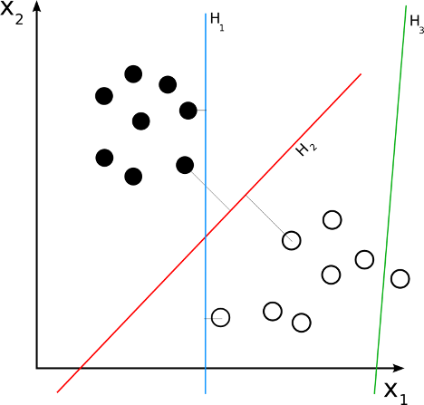
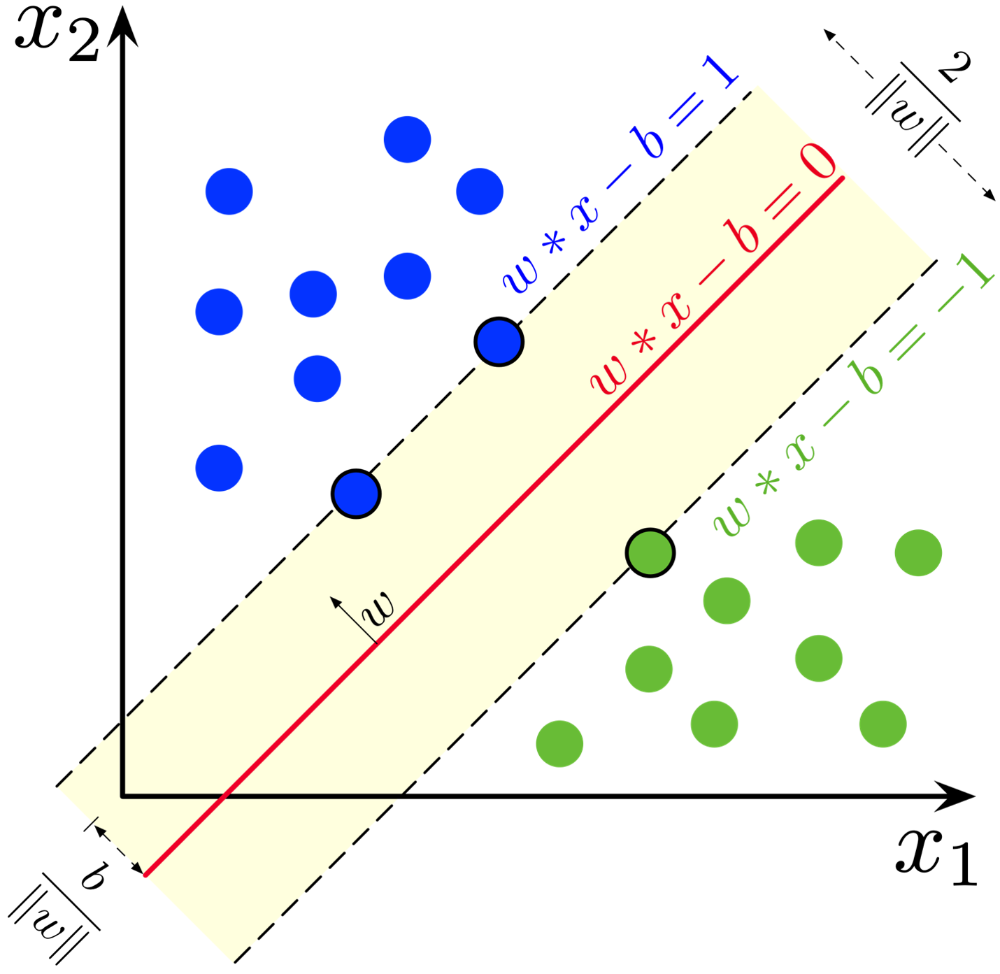
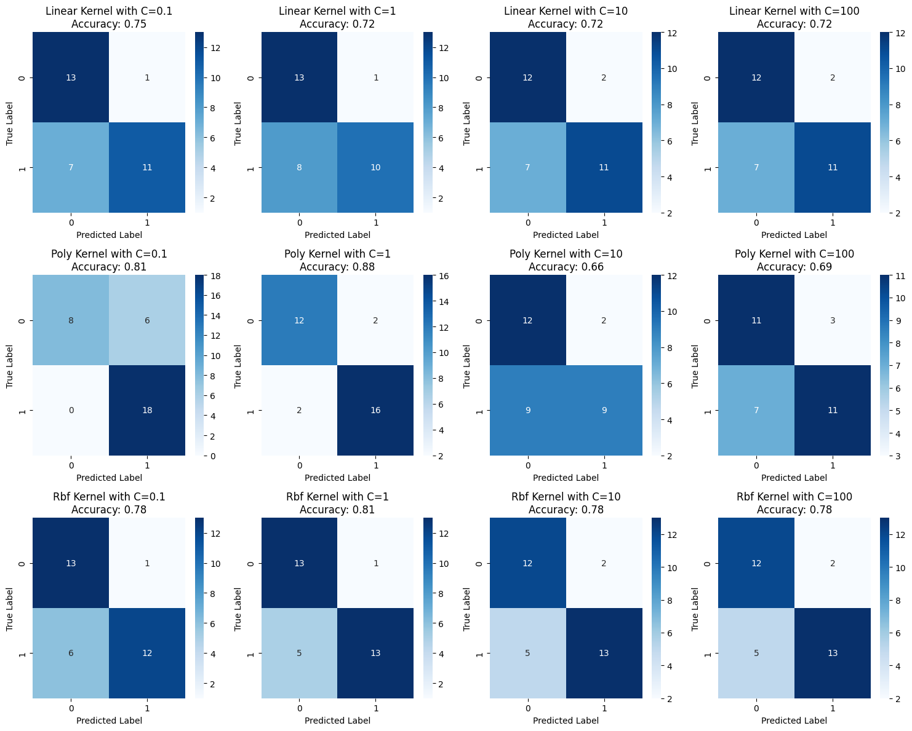

A strong and adaptable class of supervised machine learning algorithms, support vector machines (SVMs) are mainly used for classification, however they can also be modified for regression. Let us talk about the main features of Support Vector Machines (SVMs), such as the reason behind their classification as linear separators, the operation of the kernel trick, the function of the dot product, and the specifics of kernel functions such as the polynomial and radial basis function (RBF).
Linear Separators and SVMs: The idea behind SVMs is to identify the hyperplane that splits a dataset into two groups the best. SVMs are essentially linear separators; in other words, they search for the optimal line in two dimensions, plane in three dimensions, or hyperplane in higher dimensions, which will separate the data with the largest possible margin. The distance between the nearest data points from each class, referred to as the support vectors, and the hyperplane is specified as the "margin". To ensure that there is as much differentiation between the classes as feasible, the SVM optimization problem seeks to maximize this margin.
Kernel Trick: SVMs use a technique called the kernel trick to handle non-linearly separable data. Without explicitly translating the data points into that space, it enables SVMs to function in a high-dimensional domain. This is accomplished by substituting a kernel function, which calculates the similarity or dot product of data points in a converted space, for the dot product in the feature space.
Importance of the Dot Product: Since it gauges the degree of similarity between vectors (data points) in the feature space, the dot product is essential. Dot products can be used to express any operation in SVMs. By using the kernel trick, the kernel function computes an equivalent result based on the data in the original space, which is computationally more efficient than computing the dot product directly in the high-dimensional space.
Kernel Functions:
Polynomial Kernel: K(x,y) = (x⋅y + r)^d where x and y are data points in the original input space, r is a coefficient for the independent term, and d is the degree of the polynomial.
RBF Kernel (Radial Basis Function): K(x,y) = exp(−γ∥x−y∥^2) where γ is a parameter that defines the spread of the kernel and ∥x−y∥^2 is the squared Euclidean distance between the data points.
Example with Polynomial Kernel: Let’s consider a point (x1, x2) and transform it using a polynomial kernel with r = 1 and d = 2. The transformation will be: (x1, x2) → (1, 2x1, 2x2, 2x1x2, x1^2, x2^2)

Fig.1 - Example of SVM Linear Separation (Source: Wikimedia Commons)

Fig.2 - Visualization of Kernel Trick (Source: Wikimedia Commons)
Data Preparation
A sort of machine learning called supervised learning uses labeled datasets to train the model. This indicates that each occurrence in the training set consists of a target label that corresponds with the input features. Learning a mapping from inputs to outputs is the aim of supervised learning, which enables the model to predict data that hasn't been seen by using the patterns it has learnt during training.
Key Requirements for Supervised Learning:
Labeled Data: This is important because, in order to modify its parameters during training, the model needs to know the right response for every sample. Labels are necessary in order to evaluate prediction accuracy and ultimately refine the model.
Data Splitting:
Training Set: This subset of data is used to train or build the model. It includes both features (independent variables) and labels (dependent variables).
Testing Set: After training, this subset is used to evaluate the performance of the model. It helps to test the model's predictions against the known labels, providing an assessment of how well the model is likely to perform on unseen data.
Importance of Disjoint Training and Testing Sets: To guarantee an impartial and realistic assessment of the model, the training and testing sets have to be separated. In the event of an overlap, overfitting could result from the model just memorizing certain data points rather than discovering generalizable patterns. When the training set and testing set share data, the performance measures from the testing set would not correctly represent the model's efficacy on fresh, untested data.
Working with SVMs: Why Labeled Numeric Data? SVMs need labeled numerical data because they are a kind of supervised learning method. The algorithm depends on figuring out how far apart and how much margin there is between data points, which can only be done using numerical input. Before being utilized to train an SVM, non-numeric input (such as categorical data) needs to be encoded into numeric representations (for example, using one-hot encoding).
Data Preparation Steps: Here's a high-level overview of the data preparation:
Load Data: Import the dataset.
Preprocess Data: Convert any non-numeric labels or features to numeric.
Split Data: Randomly divide the dataset into training and testing sets, typically using a 70-30 or 80-20 split.
Example of Data Splitting: Let's consider a hypothetical dataset with labeled data. Here's a small snippet of how the data might look:
Feature1
Feature2
Label
5.1
-2.9
0
-3.0
3.1
1
0.5
-8.2
0
For illustration, let's create a small example with synthetic data, split it, and visualize both sets. This process will also include a visual depiction to make the distinction between training and testing sets clearer.
Fig.3 - Training Set (left plot): This subset contains 80% of the data. It's used to train the model, allowing it to learn the relationship between the features and the labels. The points are colored based on their labels, providing a visual cue of the class distribution and separation.Fig.4 - Testing Set (right plot): This subset comprises the remaining 20% of the data. It's kept separate from the training process and is used to evaluate the model's performance. The model has not seen these data points during training, ensuring that the test results reflect its ability to generalize to new data.
Why Disjoint Sets Are Necessary: In order to stop data leakage, the two sets need to be disjoint. When data from the testing set is unintentionally utilized to train the model, it is known as data leaking and results in performance measures that are too optimistic and poor generalization to new data. We guarantee an objective assessment of the real performance of the model by maintaining the sets separate.
Data Format and SVM Requirement: Since SVMs compute distances and margins in feature space to categorize the data, it is imperative that all data be numerical. Non-numeric data would cause these computations to be distorted, which would make the model useless.
In order to guarantee that the supervised learning model—such as a Support Vector Machine—is trained and assessed appropriately, this data preparation and splitting procedure is crucial. The functions of the training and testing sets in the model development lifecycle are distinguished clearly in the aforementioned graphs.
From the provided visualizations, we can make the following observations and comparisons:
Linear Kernel:
At C=0.1, the accuracy is 0.75.
Increasing the cost to C=1, C=10, and C=100 maintains the accuracy at 0.72, suggesting that increasing the cost does not have a beneficial effect on the linear kernel's performance.
Polynomial Kernel:
Shows a notable increase in accuracy from 0.81 at C=0.1 to 0.88 at C=1.
The accuracy then drops to 0.66 at C=10 and 0.69 at C=100, indicating that a cost of C=1 may be optimal in this case.
RBF Kernel:
At C=0.1, the accuracy is 0.78.
The accuracy increases to 0.81 at C=1, and remains constant at 0.78 for C=10 and C=100.
Best Performing Kernel: Out of all the examined setups, the polynomial kernel with C=1 appears to have the highest accuracy, at 0.88. In every cost parameter, it performs better than the other kernels.
In addition to accuracy, the model's ability to generalize to new data should be taken into account when selecting the best model. This ability can be affected by various factors, including the distribution of false positives and negatives and class imbalance. In addition to achieving the best accuracy, the polynomial kernel with C=1 also displays a balanced proportion of false positives and negatives, indicating strong generalization capacity.
Examining the specifics of the confusion matrices, we find that the polynomial kernel with C=1 has a higher proportion of true positives and true negatives and a lower proportion of false positives and false negatives, suggesting a model that more effectively balances precision and recall.
Additional measures like precision, recall, and F1-score could be taken into account in order to definitively decide which kernel is best. Additionally, validation on a different validation set or using cross-validation would offer more insights into the model's performance.

Fig.5 - Kernel Performance Comparison Chart
Conclusions
The SVM modeling exercise with the Car.csv dataset provides insights into supervised machine learning for classification tasks, particularly pertaining to SVM's ability to handle different types of data distributions using various kernel functions and cost parameter settings. Here's what we learned and can predict about SVMs and the specific application to the given dataset:
Kernel Choice: The performance of an SVM classifier can be significantly influenced by the choice of the kernel. Linear kernels are suitable for data that is linearly separable, while polynomial and RBF kernels are better for handling non-linear relationships.
Cost Parameter: The cost parameter controls the trade-off between having a smooth decision boundary and classifying all training points correctly. A higher cost tends to focus more on correctly classifying all training examples, which can lead to overfitting if not managed properly. Conversely, a lower cost tends to increase the margin but might lead to more misclassifications.
Polynomial Kernel Performance: In this particular case, the polynomial kernel with a cost of C=1 was found to be the most effective, achieving the highest accuracy. This indicates that a certain degree of non-linearity exists in the data, which the polynomial kernel is able to capture effectively without overfitting.
Predicting Fuel Efficiency: The goal of the classification job was to use attributes to determine which cars would have high or low fuel efficiency. The findings imply that some characteristics are predictive of fuel economy, including price, engine displacement, horsepower, and sales. The SVM models may reasonably forecast whether an automobile will be fuel-efficient, especially when using the polynomial kernel.
Model Generalization: While certain models may have high accuracy, it is important to assess how effectively they generalize to new data, based on the results of the confusion matrices and accuracy ratings. To make sure it isn't biased toward a certain class, the best-performing model should ideally have a solid balance between precision and recall.
Applicability to Real-world Scenarios: When predictions regarding a product's category (such as fuel efficiency) are required based on multiple measurable features, an SVM model like this one can be applied in real-world circumstances. It can advise consumers in making judgments about what to buy based on expected efficiency, or it can inform marketing strategies and car manufacturing decisions.
In conclusion, we can infer from this exercise that complicated relationships in data can be properly modeled and useful insights can be obtained by using an SVM classifier with the appropriate kernel and parameter tweaking. The lessons learned highlight how crucial it is to comprehend how features affect data distribution and how model complexity affects the SVM classifier's performance and capacity for generalization.